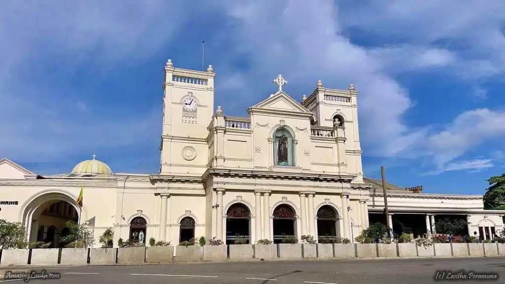

One of the most revered Catholic shrines in Sri Lanka, attracting devotees from all faiths to the heart of Kochchikade.
The history of St. Anthony's Shrine dates back to the Dutch era when it began as a small mud chapel. Today, it stands as a grand Roman Catholic church and a national shrine. It is uniquely famous for being visited by people of all religions - Buddhists, Hindus, and Muslims - who come to pray for blessings and miracles.
Inside, the shrine houses a 1st-class relic of St. Anthony, brought from Padua, Italy. The church is not just a religious landmark but a symbol of the multicultural and multi-faith unity that defines the city of Colombo.
Back to Colombo Hub